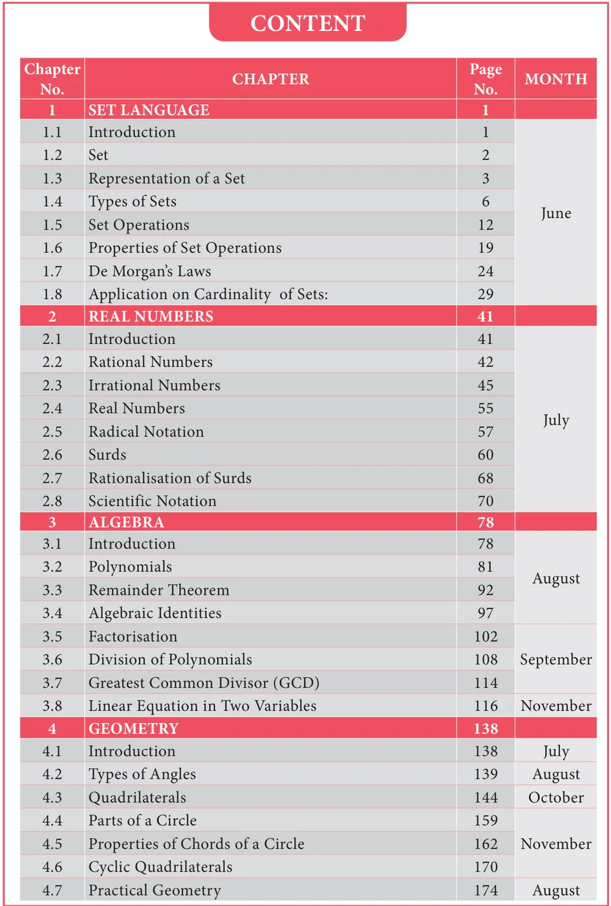
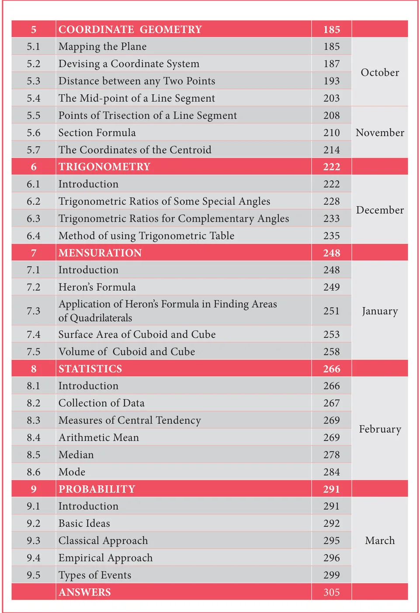

GOVERNMENT OF TAMILNADU
STANDARD NINE
MATHEMATICS
A publication under Free Textbook Programme of Government of Tamil Nadu
Department Of School Education
Untouchability is Inhuman and a Crime
Government of TamilNadu
First Edition - 2018
Revised Edition - 2019, 2020, 2022, 2023, 2025
Reprint - 2021, 2024
(Published under new syllabus)
NOT FOR SALE
A call can change your life (\(24\times 7\) toll free helplines for children below 18 years)
If you are forced into Child Marriage or Child Labour, If you are Emotionally, Physically, Sexually Harassed or Abused,
If you feel unsafe dial CHILDLINE 1098 Night & Day
Caller details will be kept confidential
If you are feeling Threatened or being Abused or Harassed – Emotionally, Physically or Sexually, If you are feeling unsafe, If you need guidance for Examinations or Higher Education
Dial 14417
Education Information Centre
Caller details will be kept confidential
Content Creation
State Council of Educational Research and Training
© SCERT 2018
Printing & Publishing
Tamil NaduTextbook and Educational Services Corporation
www.textbooksonline.tn.nic.in


Captions used in this Textbook
எண்்ணணென்்ப ஏனை எழுத்்ததென்்ப இவ்விரண்டும்
கண்்ணணென்்ப வாழும் உயிர்க்கு – குறள் 392
Numbers and letters, they are known as eyes to humans, they are. Kural 392
- Learning Outcomes
- To transform the classroom processes into learning centric with a set of bench marks
- Note
- To provide additional inputs for students in the content
- Activity / Project
- To encourage students to involve in activities to learn mathematics
- ICT Corner
- To encourage learner's understanding of content through application of technology
- Thinking Corner
- To kindle the inquisitiveness of students in learning mathematics. To make the students to have a diverse thinking
- Points to Remember
- To recall the points learnt in the topic
- Multiple Choice Questions
- To provide additional assessment items on the content
- Progress Check
- Self evaluation of the learner's progress
- Exercise
- To evaluate the learners' in understanding the content
"The essence of mathematics is not to make simple things complicated but to make complicated things simple" -S. Gudder
SYMBOLS
| \(=\) | is equal to | \(|||^{ly}\) | similarly |
| \(\neq\) | is not equal to | \(\Delta\) | symmetric difference |
| \(\lt \) | less than | \(\mathbb{N}\) | natural numbers |
| \(\le\) | less than or equal to | \(\mathbb{W}\) | whole numbers |
| \(\gt \) | greater than | \(\mathbb{Z}\) | integers |
| \(\ge\) | greater than or equal to | \(\mathbb{R}\) | real numbers |
| \(\approx\) | equivalent to | \(\triangle\) | triangle |
| \(\cup\) | union | \(\angle\) | angle |
| \(\cap\) | intersection | \(\perp\) | perpendicular to |
| \(\mathbb{U}\) | universal Set | \(\parallel\) | parallel to |
| \(\in\) | belongs to | \(\Longrightarrow\) | implies |
| \(\notin\) | does not belong to | \(\therefore\) | therefore |
| \(\subset\) | proper subset of | \(\because\) | since (or) because |
| \(\subseteq\) | subset of or is contained in | \(|\ \ |\) | absolute value |
| \(\not\subset\) | not a proper subset of | \(\simeq\) | approximately equal to |
| \(\nsubseteq\) | not a subset of or is not contained in | \(\mid \text{ (or) } :\) | such that |
| \(A' \text{ (or) } A^{c}\) | complement of \(A\) | \(\equiv \text{ (or) } \cong\) | congruent |
| \(\varnothing \text{ (or) } \{\ \}\) | empty set or null set or void set | \(\equiv\) | identically equal to |
| \(n(A)\) | number of elements in the set \(A\) | \(\pi\) | pi |
| \(P(A)\) | power set of \(A\) | \(\pm\) | plus or minus |
| \(\sum\) | summation | \(P(E)\) | probability of an event \(E\) |
E-book Evaluation